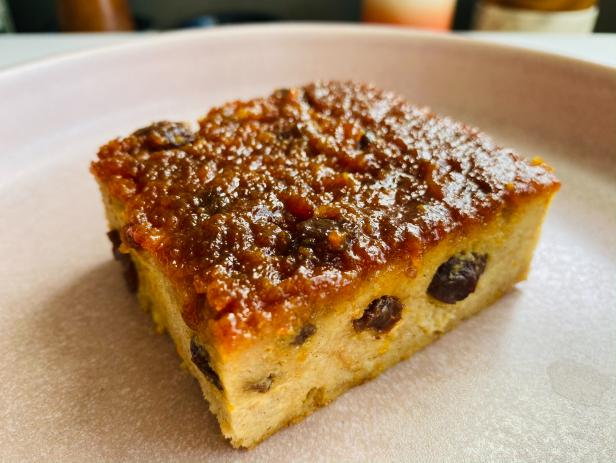

Budin De Pan

Budin has always been one of my absolute favorite dessert during Christmas times!
Quick and easy, just grab some stale bread and get baking.
Ingredients
- 1 can evaporated milk
- 3 eggs
- 6 slices of stale sandwich bread
- 1 cup of brown sugar
- 1 cup of vanilla extract
- 1 tsp of cinnamon
- 1/4 tsp nutmeg
- raisins (to your liking)
- pinch of salt
Steps
- In a big bowl, whisk eggs and sugar. Add milk, vanilla, spices, and salt.
- Crumble the bread with your fingers and add to the mix. Whisk until well
incorporated. The result should be somewhat thicker with little lumps. Let
it set for 5 to 10 minutes.
- Fold raisins into the batter. Transfer to a pre-greased baking pan.
- Bake at 350 degrees Fahrenheit for about 40–45 minutes or until set.
Traditionally Budin is served at room temperature or cold. If you don't like
raisins you may leave them out or replace them with your favorite nuts!